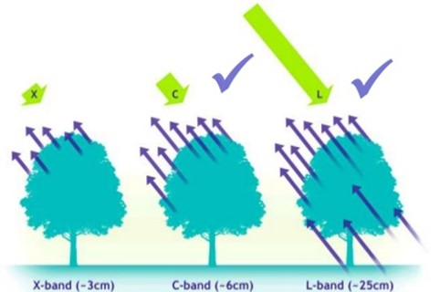
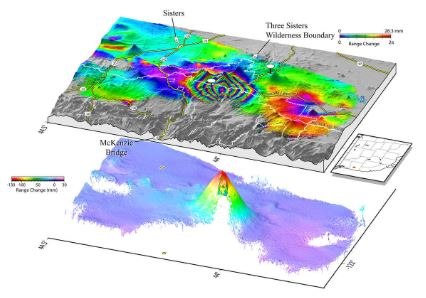

1. Sistemas de RADAR
El RADAR de apertura sintética (SAR, por sus siglas en inglés) es una tecnología de detección remota transportado sobre un avión o sobre la plataforma de un satélite, que posee un gran potencial para estudiar deformaciones del terreno, cubriendo áreas muy extensas. Los radares miden directamente el cambio de fase entre dos observaciones tomadas de posiciones de sensor ligeramente diferentes que extrae información de un mismo píxel de la superficie de la Tierra (ESA, 2017).
Los sistemas de RADAR son sistemas de teledetección activos, es decir, que emiten y reciben su propia fuente de energía, lo cual es ventajoso ya que permiten medir bajo cualquier condición atmosférica, tanto de día como de noche. Los radares transmiten radiación en el rango de los microondas del espectro electromagnético (longitudes de onda de entre 0,1 y 100 cm); el uso de señales de microondas para estas aplicaciones hace al sistema SAR resistente a perturbaciones meteorológicas, tales como nubes, tormentas e incluso nieve, siendo capaz de atravesarlas y funcionar a pesar de su presencia (García, 2011).
En la técnica InSAR es muy importante la banda utilizada por el radar, ya que determina la capacidad de penetración de la onda sobre los diferentes objetos con los que se encuentra, por lo que, a mayor longitud de onda, mayor es la capacidad de atravesar objetos. Las longitudes de onda más utilizadas por los radares son las bandas X, C y L, con longitudes de onda λ = 3, λ = 6 y λ = 25 cm respectivamente (Pearse, 2016).
Si se analiza una zona con vegetación se encuentra con la situación que muestra la Figura 1, donde una banda X rebota por lo general en la vegetación, una banda C rebota en la vegetación y parcialmente en el suelo, y una banda L rebota mayoritariamente en el suelo (Jover, 2016).
Figura 1. Capacidad de penetración de las ondas de radar
Fuente:Millin, 2013
También, el sistema SAR es un sistema de tipo coherente, porque conserva tanto la amplitud como la fase de las señales recibidas. La amplitud de una imagen proporciona información sobre la potencia de la señal reflejada por el terreno, por otra parte, la fase de la imagen es el punto de oscilación de la onda armónica electromagnética debida a la radiación de la antena SAR y está íntimamente ligada al tiempo doble de viaje, es decir, al recorrido antena-terreno-antena (Hermosilla, 2016).
2. Imágenes SAR
Una imagen de deformación se deriva de las componentes de fase entre dos imágenes SAR superpuestas. Debido a que los sensores SAR poseen un ángulo de visión lateral, las imágenes de deformación representan desplazamientos en la dirección de la línea de vista, que incluye componentes verticales y horizontales (Hermosilla, 2016). Las misiones satelitales SAR que proveen imágenes enfocadas a estudiar las deformaciones de la superficie son mucho más sensibles a desplazamientos verticales (levantamientos o subsidencias) que a los desplazamientos horizontales (Lu & Dzurisin, 2014).
Hermosilla (2016) comenta que en un interferograma la deformación superficial casi siempre es visualizada como un mapa con colores (ver Figura 2). En la mayoría de los casos los colores por sí mismos no representan nada, pero los cambios entre ellos son los que representan el cambio de fase relativo a deformación. Es imprescindible para la interpretación de un interferograma de deformación, observar la progresión de los colores para poder determinar si el movimiento es ascendente o descendente. También, es posible inferir que la superficie en donde la deformación es más agresiva estará representada por una mayor concentración de franjas, mientras que aquellas superficies cuya área esté representada por colores uniformes indican que no hubo cambios relativos en la dirección de alcance (Dzurisin, 2007).
Figura 2. Interferograma